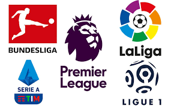

INFO DE LAS LIGAS (estadisticas).
Serie A (Italia)
LaLiga (España)
Premier League(Inglaterra)
Bundesliga (Alemania)
CONCLUSIONES:
Se tendra en cuenta la cantidad de G/A de cada jugador de cada liga
para la lista de posibles nominados.
ITALIA:
Mateo Retegui, 12 goles 3 asis = 14G/A.
Marcus Thuram, 12 goles
ESPAÑA:
Robert Lewandowski, 16 goles 2asis =18G/A.
Raphinha, 11 goles 6 asis = 17G/A.
INGLESA:
Erling Haaland, 16 goles 1 asis = 17G/A.
Mohamed Salah, 18 goles 13 asis = 31G/A.
ALEMANA:
Omar Marmoush 13 goles 7 asis = 20G/A.
Harry Kane, 14 goles 5 asis = 19G/A.
En cuanto a ligas podemos decir que
Omar Marmoush es el que mejor papel esta haciendo si tenemos en cuenta su cantidad de G/A si es cierto que
la
Bundesliga no es tan competitiva en comparacion de las demas pero tmb es cierto que el no esta en un equipo grande de dicha liga siendo jugador del
FRANKFURT
hay que destacar su actuacion en la bundesliga.
Entre los nombrados de las ligas
ESPAÑA Y INGLESA no se sacan mucha diferencia, se vebastante pareja la pelea, se pueden ver dos Extremos y dos Delanteros centro,
yo creo que la ventaja la tienen los jugadroes de la Premier mas que nada por la competitividad de ambas ligas, si bien la Española es muy competitiva no se compara en los ultimos
años a la
competitividad de la Premier League.
En conclusion Erling Haaland, Mohamed Salah y Omar Marmoush son los 3 destacados hasta el momento en el ambito solamente de ligas, Erling Haaland y Mohamed Salah
por su desempeño en la mejor liga del mundo en los ultimos años, y Omar Marmoush por su desempeño en la Bundesliga siendo jugador de un equipo inferior en los papeles de los
utimos años como el Frankfurt y llevandolo con sus goles y asistencias a estar 3ros en la tabla de la Bundesliga por encima de equipos como el Dormunt y el Leverkusen, uno es el
subcampeon de la Champions Ligue y el otro es el subcampeon de Europaligue y vigente campeon de la Bundesliga.
